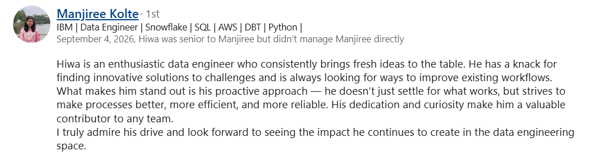
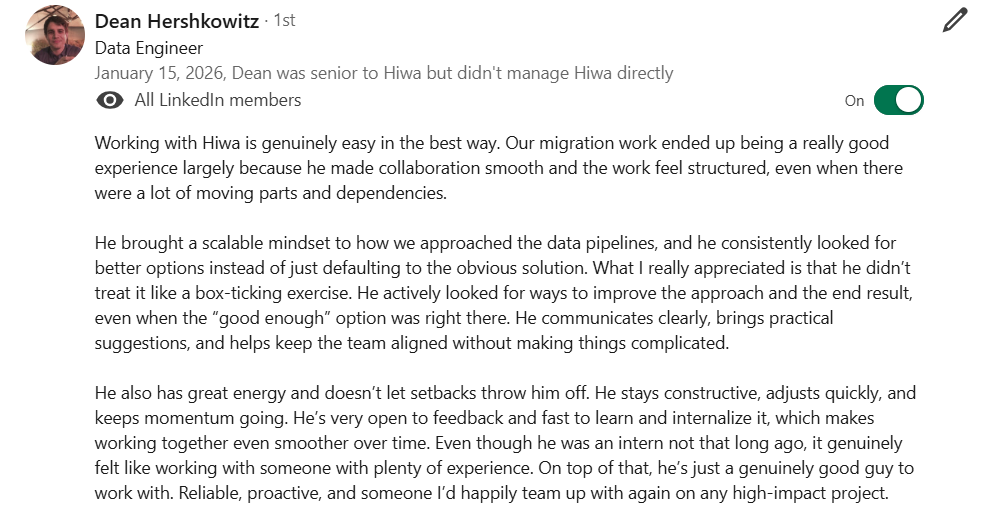
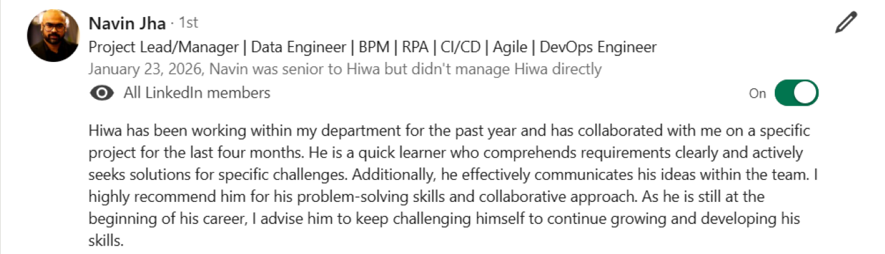
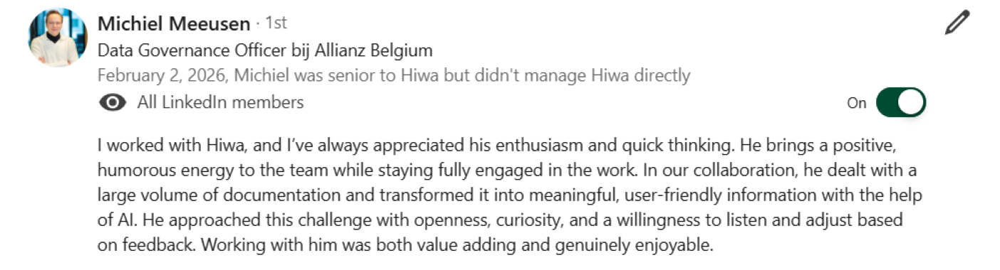

I like building things. Bots, pipelines, whatever looks fun or annoying enough to automate. Here are a few of them; each one links to the full story in my blogs. At Allianz I did that with data: a freshness check that tells you if your data actually arrived, validation that runs itself, cleanup tooling that found 5,000 tables nobody needed, and AI workflows that turned 8-hour tasks into minutes. Off work, same thing: AI racing bot: taught it to race and block, world top 0.2%. NeoCru: recruitment platform, built it, shut it down properly. Meme Factory: LinkedIn memes on autopilot, 100 days for $0.34. Half Stupid: Minecraft agents figuring out how to not die.




Tilburg University, Netherlands
2022 - 2025Tehran University, Iran
2020 - 2022Sanandaj NODET High School (National Organization for Development of Exceptional Talents), Iran
2017 - 2020